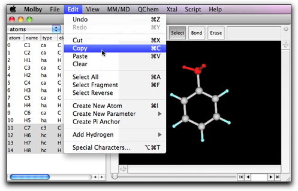
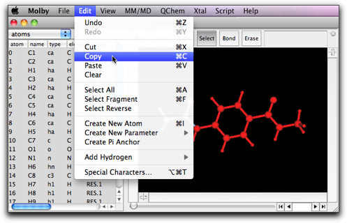
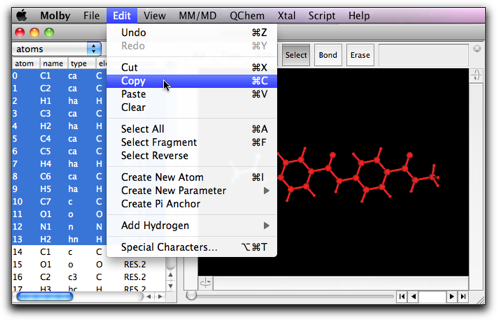
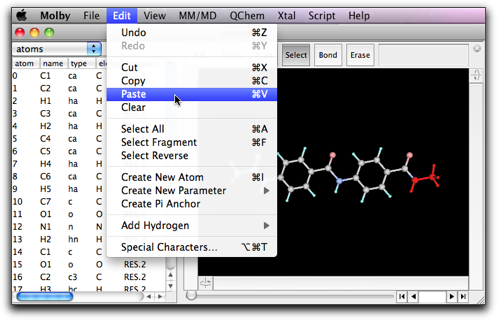
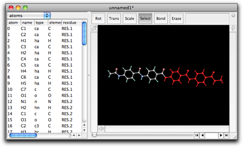

第三段階：分子を編集する：カット・コピー・ペースト
他のアプリケーションと同様に、Molby もクリップボードを使ってカット・コピー・ペーストを行う機能があります。これらの機能、特にコピー・ペーストは複雑な分子を作るときにたいへん有用です。
ふたたびトルエン分子から始めます。メチル基を選択して、コピーします。

メチル基の選択を解除して、ペーストを実行します。他の原子と結合していないメチル基がもう一つ現れます。原子が選択されていない状態で「ペースト」すると、このような動作になります。

今度は、ペーストする前に原子が選択されているときにどうなるかを見てみます。上と同じように、トルエンから始めて、メチル基を選択して、コピーします。メチル基の選択を解除して、今度はメチル基のオルト位の水素原子を選択します。

ペーストを実行します。選択された水素原子がメチル基に置き換わります。オルト位の炭素とメチル基の間に新しい結合ができ、その長さと結合角が適切なものになっていることがわかります。
二面角は適切でないこともあります。その場合は、ペーストされたグループを左の回転バーを使って回転させて、適切な二面角にします。

この「選択してペースト」のテクニックは、大きな分子を作るときにたいへん役に立ちます。たとえば、オリゴベンズアミドを作りたいとします。

まず、「モノマー」となる N-メチル-4-アセトアミドベンズアミドを作ります。次のようにします：(1) ベンゼンを作る、(2) H1 を選択してダブルクリックし、「CONHCH3」とタイプする、(3) H4 を選択してダブルクリックし、「NHCOCH3」とタイプする。化学式をタイプしたあとは、作成したフラグメントを回転させて二面角を調整しておきます。

左端の COCH3 以外全部を選択し、コピーします。

右端の NHCH3 を選択し、「ペースト」を実行します。

新しくアミド結合が作られ、二量体ができます。
"Show" メニューから "Fit to Screen" を選び、分子全体が見えるようにします。
この操作を繰り返して、四量体を作ります。




もう一度繰り返して、八量体を作ります。